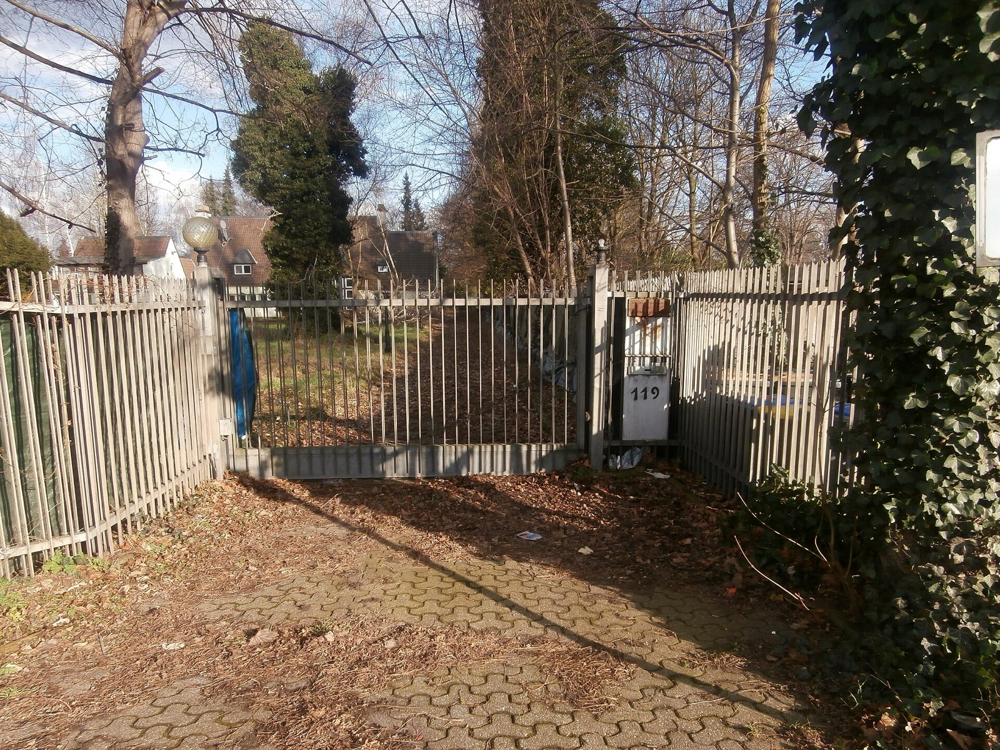
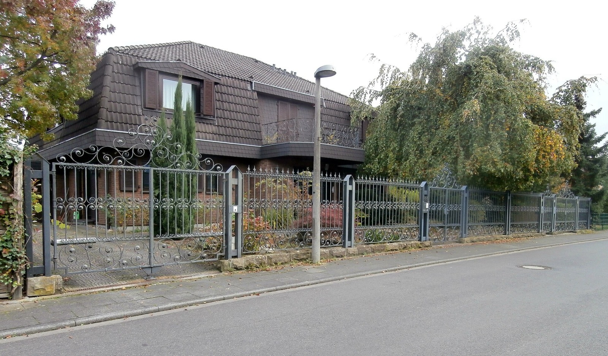

Ein Haus in Hahnwald verkaufenheißt: den richtigen Käufer finden, nicht den nächsten.
2025 wurden hier freistehende Häuser für 1,35 und für 5,2 Millionen Euro bezahlt. Bei so wenigen Verkäufen im Jahr entscheidet nicht der Quadratmeterpreis, sondern wer überhaupt infrage kommt.
Was könnte Ihre Immobilie in Köln-Hahnwald erzielen?
In sechs Schritten zu einer realistischen Einschätzung. Kostenlos, unverbindlich und ohne Vertrag. Womit fangen wir an?
Andere Objektart wählenWas wurde 2025 in Hahnwald tatsächlich bezahlt?
Der Gutachterausschuss für Grundstückswerte in der Stadt Köln wertet jeden beurkundeten Kaufvertrag im Stadtgebiet aus. Für Hahnwald liegen für 2025 zehn Verkäufe freistehender Häuser vor. Das ist die belastbarste Grundlage, die es für diesen Markt gibt — und zugleich eine sehr kleine Zahl.
Die ausgewerteten Häuser hatten im Schnitt rund 357 Quadratmeter Wohnfläche auf Grundstücken von durchschnittlich etwa 1.785 Quadratmetern. Auch bezogen auf den Quadratmeter bleibt die Spanne außergewöhnlich: von rund 4.091 bis 15.758 Euro, bei einem Mittel von etwa 7.689 Euro.
Fünf Prozent sind hier eine sechsstellige Zahl. Bei einem durchschnittlichen Kaufpreis von 2,575 Millionen Euro entsprechen fünf Prozent rund 129.000 Euro; bei vier Millionen sind es 200.000. Ein Angebotspreis, der um wenige Prozentpunkte danebenliegt, kostet in diesem Segment mehr, als andernorts eine ganze Wohnung wert ist — in beide Richtungen.
| Segment | Ausgewertete Verkäufe | Spanne | Mittel |
|---|---|---|---|
| Freistehende Häuser | 10 | 1,35 – 5,2 Mio € | 2,575 Mio € |
| … je m² Wohnfläche | 10 | 4.091 – 15.758 € | 7.689 € |
| Eigentumswohnungen | 5 | bis 3,83 Mio € | 1,84 Mio € |
| … je m² Wohnfläche | 5 | — | 7.952 € |
Grundstücksmarktbericht 2026 des Gutachterausschusses für Grundstückswerte in der Stadt Köln. Die Häuser hatten im Mittel 357 m² Wohnfläche auf 1.785 m² Grundstück. Bei zehn beziehungsweise fünf ausgewerteten Fällen verschiebt jeder einzelne Verkauf das Mittel spürbar — das ist keine Schwäche der Statistik, sondern die Eigenart eines kleinen Marktes.
Und die Eigentumswohnungen?
Hahnwald ist nicht nur ein Häusermarkt, auch wenn er so wahrgenommen wird. Für 2025 sind zusätzlich fünf Weiterverkäufe von Eigentumswohnungen ausgewertet, im Mittel bei rund 1,84 Millionen Euro; ein Verkauf erreichte etwa 3,83 Millionen. Bezogen auf die Wohnfläche liegt Hahnwald damit bei 7.952 Euro je Quadratmeter — dem höchsten Wert aller 79 Kölner Stadtteile, für die der Gutachterausschuss einen Wohnungspreis ausweist.
Wo läge Ihre Immobilie in dieser Spanne?
Die folgende Einordnung ist keine Bewertung — sie rechnet nur Ihre Angaben gegen die tatsächlich beurkundeten Werte. Was sie zeigt: In welchem Bereich der Spanne Sie sich bewegen und was ein Prozentpunkt in diesem Segment bedeutet.
Gerechnet wird ausschließlich mit den Werten des Grundstücksmarktberichts. Grundstücksgröße, Zustand, Architektur, Ausstattung und mitverkauftes Inventar fehlen in dieser Rechnung vollständig — und genau sie entscheiden in Hahnwald über den Preis.
Warum liegen zwei Häuser im selben Stadtteil Millionen auseinander?
Weil in diesem Segment fast alles, was den Preis bestimmt, nicht in der Statistik steht. Wohnfläche und Grundstücksgröße erklären den Abstand nicht — beide schwanken in Hahnwald deutlich weniger als der Preis.
Architektur und Raumwirkung. Ob ein Haus großzügig wirkt oder nur groß ist, entscheidet sich an Deckenhöhen, Lichtführung und Grundriss. Zwei Häuser mit identischer Quadratmeterzahl können hier weit auseinanderliegen.
Modernisierungsstand. Ein Haus aus den 1970er Jahren im Originalzustand und eines, das vor drei Jahren vollständig ertüchtigt wurde, treffen auf verschiedene Käufer — und auf verschiedene Preise.
Privatsphäre. Einsehbarkeit, Abstand zur Nachbarbebauung, Lage des Gartens. In Hahnwald ist das kein weiches Kriterium, sondern häufig der eigentliche Kaufgrund.
Feste Ausstattung. Klima- und Sicherheitstechnik, Gebäudesteuerung, maßgefertigte Einbauten. Solche Anlagen sind wirtschaftlich relevant und gehören sauber erfasst.

Was zählt zur Immobilie — und was ist Inventar?
Bei hochwertigen Objekten kommt eine Frage hinzu, die eine reine Flächenbewertung nicht kennt: Was genau bekommt der Käufer für seinen Kaufpreis? Eine Einbauküche, die einmal 50.000 oder 100.000 Euro gekostet hat, erhöht den Immobilienwert nicht um denselben Betrag. Sie kann aber sehr wohl beeinflussen, wie ein Käufer das Gesamtbild bewertet — und was er insgesamt zu zahlen bereit ist.
Deshalb trennen wir vor der Preisfindung drei Dinge: die Immobilie selbst, die fest verbundene Ausstattung und das mitverkaufte Inventar. Diese Trennung ist nicht nur eine Frage der Bewertung. Sie wirkt sich auch auf den Kaufvertrag aus, weil beweglicher Hausrat anders behandelt wird als das Grundstück samt Gebäude.
2.000 m² mal 1.270 Euro — ist mein Grundstück 2,54 Millionen wert?
Die Rechnung geht auf, die Schlussfolgerung nicht. Für Hahnwald weist BORIS NRW zum Stichtag 1. Januar 2026 einen Bodenrichtwert von 1.270 Euro je Quadratmeter aus — und zwar als einzige Zone für den gesamten Stadtteil. Damit gehört Hahnwald zu den wenigen Kölner Stadtteilen ohne jede Binnendifferenzierung im amtlichen Bodenwert.
Der Gutachterausschuss stellt selbst klar, was ein Bodenrichtwert ist: ein durchschnittlicher Lagewert innerhalb einer Zone, bezogen auf ein Grundstück mit typisierten Eigenschaften. Weicht Ihr Grundstück davon ab — in Zuschnitt, Erschließung, Bebauung oder Nutzbarkeit —, weicht auch sein Wert ab.
Was darf auf dem Grundstück tatsächlich entstehen?
Diese Frage ist wirtschaftlich oft die wichtigste. Ein großes Grundstück nützt einem Käufer wenig, wenn sich seine Vorstellungen dort planungsrechtlich nicht umsetzen lassen. In Hahnwald gilt das sehr konkret: Für den Bereich Kiesgrubenweg besteht der Bebauungsplan Nr. 69370/02, für andere Lagen gelten andere Vorgaben. Was zulässig ist, lässt sich deshalb nicht für den Stadtteil beantworten, sondern nur für das einzelne Grundstück.
Vor der Vermarktung gehören außerdem auf den Prüfstand: Eintragungen im Grundbuch, Baulasten, Erschließungssituation und die Frage, ob eine vorhandene Bebauung erhalten bleiben soll oder nicht.
Wann ist das Grundstück wichtiger als das Haus darauf?
Bei einer älteren Villa auf großzügigem Grund sehen drei Interessenten drei verschiedene Objekte: Der eine sieht Modernisierungsbedarf, der zweite erhaltenswerte Architektur, der dritte vor allem die Fläche und ihre Möglichkeiten. Dasselbe Anwesen kann für alle drei wertvoll sein — aus völlig verschiedenen Gründen und zu verschiedenen Preisen.
Für die Vermarktung ist das keine Nebensächlichkeit, sondern die erste Weichenstellung. Sie entscheidet, wie das Objekt dargestellt wird, welche Unterlagen im Vordergrund stehen und welche Käufergruppe überhaupt angesprochen wird.
Wer kauft in Hahnwald — und warum ausgerechnet hier?
Hahnwald ist mit 1.940 Einwohnern der zweitkleinste Stadtteil Kölns; nur Libur hat weniger. Auf 854 Wohnungen kommen 850 Haushalte — der Bestand ist praktisch vollständig belegt. Und in drei Kennzahlen führt der Stadtteil die Stadt an:
Wohnfläche je Wohnung224,2 m²Rang 1 von 87 — Rang 2 liegt bei 117,6 m², Köln bei 77,3
Wohnfläche je Einwohner98,7 m²Rang 1 von 87 — Köln: 40,6 m²
Wohnungspreis im Weiterverkauf7.952 €/m²Rang 1 von 79 ausgewiesenen Stadtteilen
Öffentlich geförderte Wohnungen0,0 %Köln: 6,2 %
Stadt Köln, Amt für Stadtentwicklung und Statistik, Stand 31. Dezember 2025, sowie Gutachterausschuss für Grundstückswerte, Berichtsjahr 2025. Ränge selbst berechnet.
Diese Zahlen beschreiben die Käufergruppe genauer als jede Berufsbezeichnung. Wer hier kauft, sucht Fläche, Abstand und Ruhe — und kann dafür Beträge aufwenden, die anderswo ein ganzes Mehrfamilienhaus kosten. Zur Gruppe gehören Unternehmerfamilien, Führungskräfte, erfolgreiche Selbstständige und Menschen, die beruflich stark in der Öffentlichkeit stehen; auch internationale Käufer mit Bezug zu Köln spielen eine Rolle.
Warum wir keine Namen nennen. Über prominente Bewohner Hahnwalds ist viel geschrieben worden. Auf dieser Seite stehen keine — aus zwei Gründen. Erstens ändern sich Wohnorte, und Angaben aus Medienberichten sind selten aktuell. Zweitens wäre es ein Widerspruch: Wer Diskretion als Leistung anbietet, sollte nicht mit den Adressen anderer Leute werben.
Reicht es, einen vermögenden Käufer zu finden?
Nein — und das ist der häufigste Denkfehler in diesem Segment. Wer mehrere Millionen aufwenden kann, hat Alternativen: eine andere Villa, ein Grundstück zum Neubau, oder schlicht Zeit zu warten. Die Vorstellung, für ein Anwesen in Hahnwald finde sich „schon jemand", verkennt, dass die Zahl geeigneter Käufer klein ist und ihre Ansprüche präzise.
Deshalb beginnt die Arbeit nicht bei der Frage, wo inseriert wird, sondern bei einer anderen: Was muss ein Käufer an diesem Objekt erkennen, damit aus Interesse eine Entscheidung wird? Erst daraus ergeben sich Fotografie, Exposé, Ansprache und der Ablauf der Besichtigung.
Hahnwald oder Marienburg — was unterscheidet die beiden?
Beide gelten als Kölns Villenviertel, und beide liegen im Stadtbezirk Rodenkirchen. Wirtschaftlich funktionieren sie jedoch gegensätzlich. Wer zwischen ihnen vergleicht — als Verkäufer oder als Käufer —, sollte die Unterschiede kennen.
Wohnungspreis im Weiterverkauf7.952 € / 5.684 €Hahnwald liegt 40 Prozent über Marienburg — und ist damit Kölns teuerster Stadtteil
Bodenrichtwert je m²1.270 € / 2.100 €Umgekehrt: Marienburgs Boden ist 65 Prozent teurer
Wohnfläche je Wohnung224,2 m² / 108,1 m²In Hahnwald steht doppelt so viel Haus je Wohneinheit
Neubauwohnungen 202517 / 568Marienburg ist Kölns größte Baustelle, Hahnwald verändert sich kaum
Einwohner1.940 / 7.240Hahnwald ist Kölns zweitkleinster Stadtteil
Warum ist der Boden günstiger, das Haus aber teurer?
Das wirkt zunächst widersprüchlich, hat aber einen einfachen Grund: Bebauungsdichte. Der Bodenrichtwert bildet ab, was je Quadratmeter Grundstück gebaut werden darf — nicht, wie exklusiv eine Lage wirkt. In Hahnwald steht wenig Haus auf viel Grund; in Marienburg deutlich mehr. Derselbe Quadratmeter Boden trägt dort also mehr Wohnfläche und ist entsprechend höher bewertet.
Für Eigentümer folgt daraus zweierlei. Erstens: In Hahnwald macht die Grundstücksgröße einen größeren Anteil des Werts aus, weil die Flächen größer sind — 1.785 Quadratmeter im Mittel der ausgewerteten Verkäufe. Zweitens: Eine Bewertung, die den Bodenrichtwert einfach mit der Fläche multipliziert, führt hier weiter in die Irre als anderswo.
Und was heißt das für den Wettbewerb?
Der wichtigste Unterschied steht in der Neubauzeile. In Marienburg entstehen gerade 752 Wohnungen auf dem früheren Deutsche-Welle-Gelände; wer dort verkauft, muss sich davon abgrenzen. In Hahnwald gab es 2025 ganze 17 neue Wohneinheiten. Neubaukonkurrenz existiert praktisch nicht — der Wettbewerb entsteht ausschließlich mit den wenigen vergleichbaren Objekten, die gleichzeitig angeboten werden.
Bei zehn ausgewerteten Hausverkäufen im Jahr heißt das: Über die Monate gerechnet stehen selten mehr als zwei oder drei Anwesen gleichzeitig am Markt. Diese Knappheit ist Ihr stärkstes Argument — und zugleich der Grund, warum sich der richtige Zeitpunkt und die richtige Käuferansprache hier stärker auswirken als in jedem anderen Kölner Stadtteil.
Muss eine Villa in Hahnwald öffentlich angeboten werden?
Nein. Und häufig ist es nicht der beste Weg. Grundrisse, Innenaufnahmen und Details zur Grundstückssituation sind Informationen, die nicht jeder Eigentümer öffentlich sehen möchte — schon gar nicht, wenn Sicherheitsfragen eine Rolle spielen.
Vor dem Markt
Die Immobilie wird zunächst ausgewählten Kontakten angeboten, bevor über eine öffentliche Vermarktung entschieden wird. So lässt sich prüfen, ob im vorhandenen Netzwerk ernsthaftes Interesse besteht — ohne dass das Objekt am Markt „gestanden" hat.
Ohne Markt
Die Immobilie erscheint nicht auf Portalen. Geeignete Interessenten werden gezielt angesprochen, Informationen kontrolliert weitergegeben. Sinnvoll, wenn Diskretion Vorrang hat.
Öffentlich, aber hochwertig
Die breitere Ansprache erreicht mehr geeignete Käufer und kann Wettbewerb um das Objekt erzeugen. Wo das gelingt, ist es wirtschaftlich oft die bessere Wahl — Diskretion hat ihren Preis.
Welcher Weg passt, hängt vom Objekt und von Ihrer Situation ab, nicht davon, welcher exklusiver klingt. Diese Entscheidung treffen wir vorher gemeinsam — sie lässt sich später nur schwer korrigieren, weil ein Objekt, das schon öffentlich stand, nicht mehr diskret angeboten werden kann.
Ist das höchste Angebot das beste?
Nicht zwangsläufig. Zwei Interessenten, der eine bietet mehr, kann die Umsetzung aber nicht belegen; der andere bietet etwas weniger und weist nach, wie der Erwerb erfolgen soll. Welches Angebot besser ist, entscheidet sich nicht am Preis allein, sondern an Belastbarkeit, Übergabezeitpunkt und der Wahrscheinlichkeit, dass es zur Beurkundung kommt.
Deshalb prüfen wir früh, wie konkret ein Interessent ist und wie der Kauf umgesetzt werden soll — bei Finanzierung ebenso wie beim Erwerb aus vorhandenem Vermögen. Weil Highseller neben der Erlaubnis nach § 34c GewO auch die als Immobiliardarlehensvermittler nach § 34i GewO hat, können wir dabei einschätzen, ob eine geplante Finanzierung zum Kaufpreis passt. Eine Kreditzusage kann niemand versprechen; die trifft die Bank.
Ist eine Villa Am Waldpark mehr wert als eine Unter den Birken?
Der Straßenname allein bestimmt keinen Wert — auch nicht in Hahnwald, wo der amtliche Bodenrichtwert ohnehin für den ganzen Stadtteil derselbe ist. Was zählt, ist die Lage des einzelnen Grundstücks: Ausrichtung, Einsehbarkeit, Nachbarbebauung, Zufahrt, Ruhe. Zwei Anwesen in derselben Straße können sich darin deutlich unterscheiden.
Die 31 Straßen in Köln-Hahnwald
- Adam-Riese-Straße
- Am Eichenwäldchen
- Am Hermannshof
- Am Neuen Forst
- Am Stiftswäldchen
- Am Ulrichshof
- Am Waldpark
- Am Zehnpfennigshof
- An der Wachsfabrik
- Bonner Landstraße
- Dieselstraße
- Emil-Hoffmann-Straße
- Fasanenweg
- Hahnenstraße
- Hahnwaldweg
- Im Ahorngrund
- Im Finkenhain
- Im Hasengarten
- Im Meisengrund
- Judenpfad
- Kelvinstraße
- Kiesgrubenweg
- Kirschbaumweg
- Mannesmannstraße
- Merrillweg
- Osterriethweg
- Unter den Birken
- Wankelstraße
- Wattigniesstraße
- Wieselweg
- Zum Landhaus
Straßenverzeichnis der Stadt Köln. Bei einzelnen Straßen entscheidet der Hausnummernbereich über die Stadtteilzuordnung — mehrere verlaufen über die Grenze nach Rodenkirchen.
Von 691 Wohngebäuden in Hahnwald sind 674 Ein- oder Zweifamilienhäuser — 97,5 Prozent. Diese Struktur erklärt, warum der Stadtteil bei der Wohnfläche je Wohnung mit 224,2 Quadratmetern so weit vor allen anderen liegt: Es gibt schlicht kaum Geschosswohnungsbau, der den Schnitt senken würde.
Was Ihre Immobilie wert ist, sehe ich mir vor Ort an
Für eine erste Orientierung können Sie den Immobilienwertrechner nutzen. Er arbeitet mit Lage, Fläche, Baujahr und Zustand — und stößt in diesem Segment schnell an seine Grenze: Architektur, Ausstattungsqualität, Privatsphäre und mitverkauftes Inventar kann er nicht erfassen, und genau diese Punkte machen in Hahnwald den Unterschied zwischen 1,35 und 5,2 Millionen aus.
Deshalb komme ich für eine belastbare Einschätzung persönlich vorbei. Sie müssen dafür weder Unterlagen zusammensuchen noch einen Auftrag erteilen — und wenn Sie diskret bleiben möchten, besprechen wir das gleich zu Beginn.
Baris Ölmez, Inhaber · +49 162 8811110 · Kranhaus 1, Im Zollhafen 18, 50678 Köln
Bildnachweis: Am Waldpark 44: Leit, CC BY-SA 4.0 · Am Zehnpfennigshof 22: Elke Wetzig, CC BY-SA 4.0 · Bonner Landstraße 119: Leit, CC BY-SA 4.0, alle über Wikimedia Commons. Marktdaten: Gutachterausschuss für Grundstückswerte in der Stadt Köln (Grundstücksmarktbericht 2026, Auswertungsjahr 2025), BORIS NRW zum Stichtag 1. Januar 2026 sowie Amt für Stadtentwicklung und Statistik der Stadt Köln.